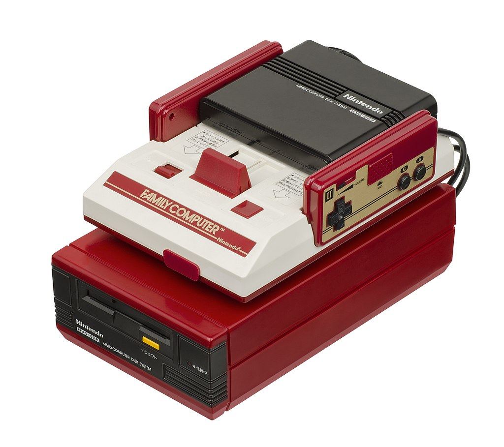
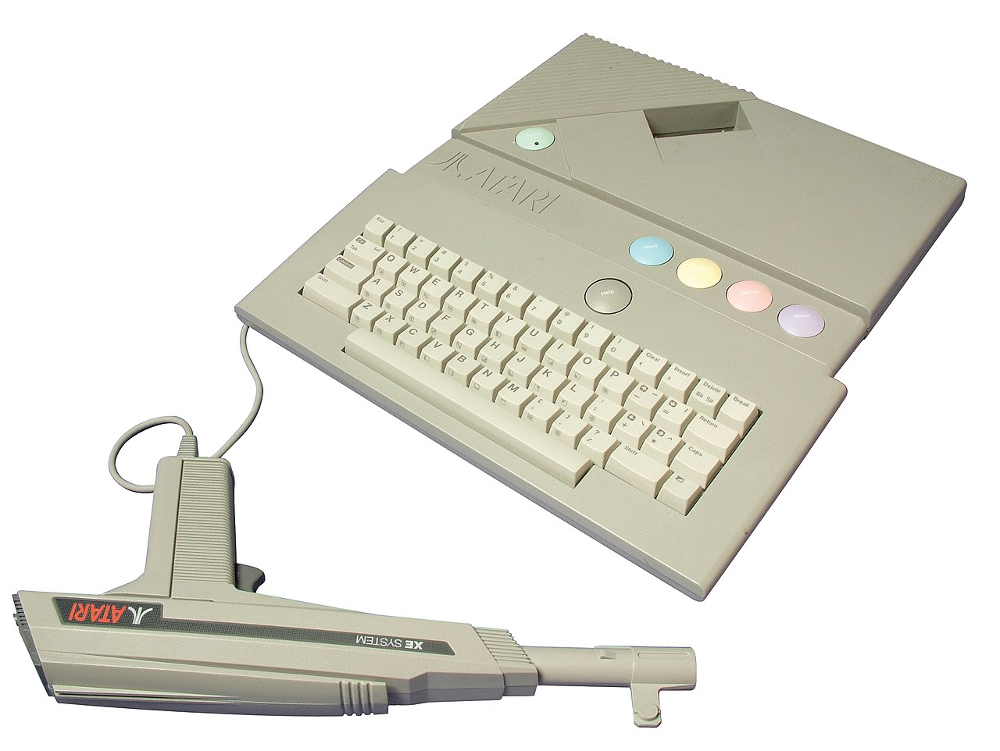

The NES

The Nintendo Entertainment System (NES) is an 8-bit third-generation home video game console produced by Nintendo. Nintendo first released it in Japan as the Family Computer, commonly known as the Famicom, in 1983. The NES, a remodelled version, was released internationally in the following years.
The NES featured a number of groundbreaking games, such as the platform game Super Mario Bros. and the action-adventure games The Legend of Zelda and Metroid. As one of the bestselling consoles of its time, the NES helped revitalize the US video game industry following the video game crash of 1983. Nintendo introduced a now-standard business model of licensing third-party developers to produce and distribute games for the NES. The NES was succeeded by the Super Nintendo Entertainment System, which launched in Japan in 1990 and released in North America in 1991.
Master System

The Sega Master System is a third-generation 8-bit home video game console manufactured by Sega. It was originally a remodeled export version of the Sega Mark III, the third iteration of the SG-1000 series of consoles, which was released in Japan in 1985 and featured enhanced graphical capabilities over its predecessors. The Master System launched in North America in 1986, followed by Europe in 1987, and Brazil in 1989. A Japanese version of the Master System was also launched in 1987, which features a few enhancements over the export models (and by proxy the original Mark III): a built-in FM audio chip, a rapid-fire switch, and a dedicated port for the 3D glasses. The Master System II, a cheaper model, was released in 1990 in North America and Europe.
The original Master System models use both cartridges and a credit card-sized format known as Sega Cards. Accessories for the consoles include a light gun and 3D glasses that work with a range of specially designed games. The later Master System II redesign removed the card slot, turning it into a strictly cartridge-only system and is incompatible with the 3D glasses.
The Master System was released in competition with the Nintendo Entertainment System (NES). Its library is smaller and with fewer well-reviewed games than the NES, due in part to Nintendo licensing policies requiring platform exclusivity. Though the Master System had newer, improved hardware, it failed to overturn Nintendo's significant market share advantage in Japan and North America. However, it attained significantly more success in Europe and Brazil.
Master System sales estimates are between 10 and 13 million units. Retrospective criticism has recognized its role in the development of the Sega Genesis, and a number of well received games, particularly in PAL (including PAL-M) regions, but is critical of its limited library in the NTSC regions, which were dominated by the Nintendo Entertainment System.
Famicom Disk System
The Family Computer Disk System, commonly shortened to the Famicom Disk System, FDS, or just Disk System, is a peripheral for Nintendo's Family Computer home video game console, released only in Japan on February 21, 1986. It uses proprietary floppy disks called "Disk Cards" for cheaper data storage and it adds a new high-fidelity sound channel for supporting Disk System games.
Fundamentally, the Disk System serves simply to enhance some aspects already inherent to the base Famicom system, with better sound and cheaper games—though with the disadvantages of high initial price, slow speed, and lower reliability. However, this boost to the market of affordable and writable mass storage temporarily served as an enabling technology for the creation of new types of video games. This includes the vast, open world, progress-saving adventures of the best-selling The Legend of Zelda (1986) and Metroid (1986), games with a cost-effective and swift release such as the best-selling Super Mario Bros. 2, and nationwide leaderboards and contests via the in-store Disk Fax kiosks, which are considered to be forerunners of today's online achievement and distribution systems.
By 1989, the Famicom Disk System was inevitably obsoleted by the improving semiconductor technology of game cartridges. The Disk System's lifetime sales reached 4.4 million units by 1990. Its final game was released in 1992, its software was discontinued in 2003, and Nintendo officially discontinued its technical support in 2007.
Atari XEGS
The Atari XE Video Game System (Atari XEGS) is an industrial redesign of the Atari 65XE home computer and the final model in the Atari 8-bit family. It was released by Atari Corporation in 1987 and marketed as a home video game console alongside the Nintendo Entertainment System, Sega's Master System, and Atari's own Atari 7800. The XEGS is compatible with existing Atari 8-bit family hardware and software. Without keyboard, the system operates as a stand-alone game console. With the keyboard, it boots identically to the Atari XE computers. Atari packaged the XEGS as a basic set consisting of only the console and joystick, and as a deluxe set consisting of the console, keyboard, CX40 joystick, and XG-1 light gun.
The XEGS release was backed by new games, including Barnyard Blaster and Bug Hunt, plus cartridge ports of older games, such as Fight Night (Accolade, 1985), Lode Runner (Broderbund, 1983), Necromancer (Synapse Software, 1982), and Ballblazer (Lucasfilm Games, 1985). Support for the system was dropped in 1992, along with the rest of Atari's 8-bit computers, the Atari 2600, and the Atari 7800.